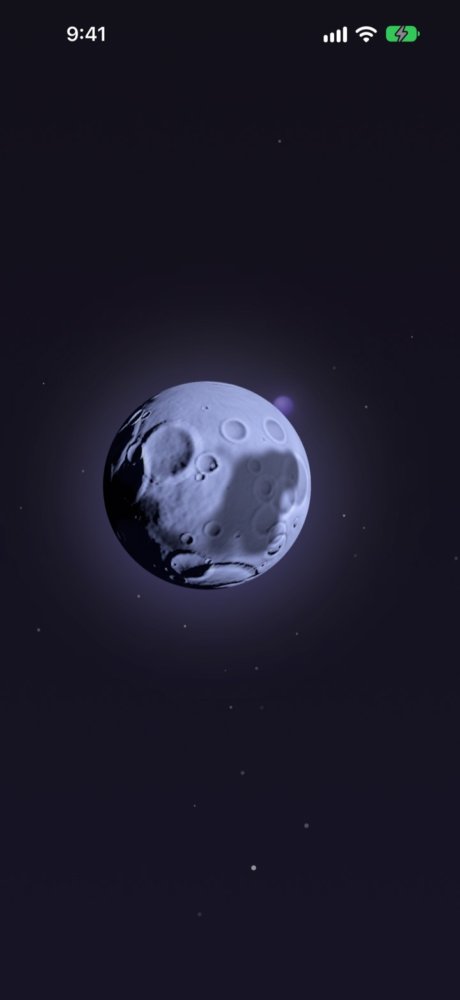
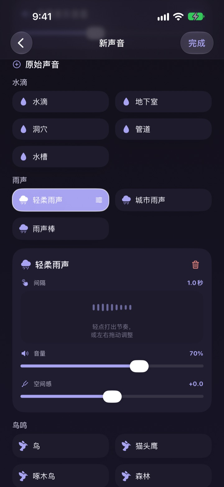
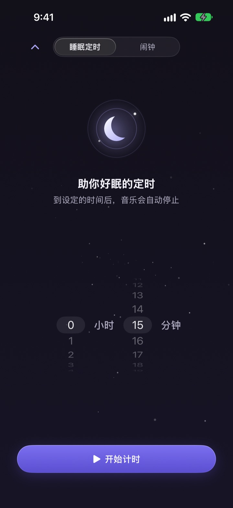
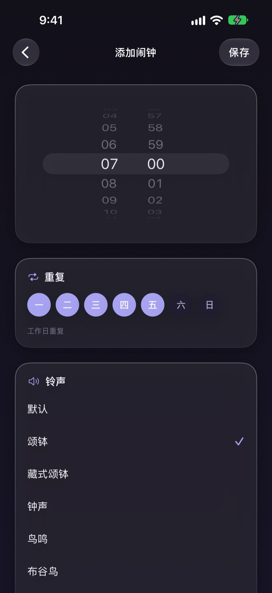
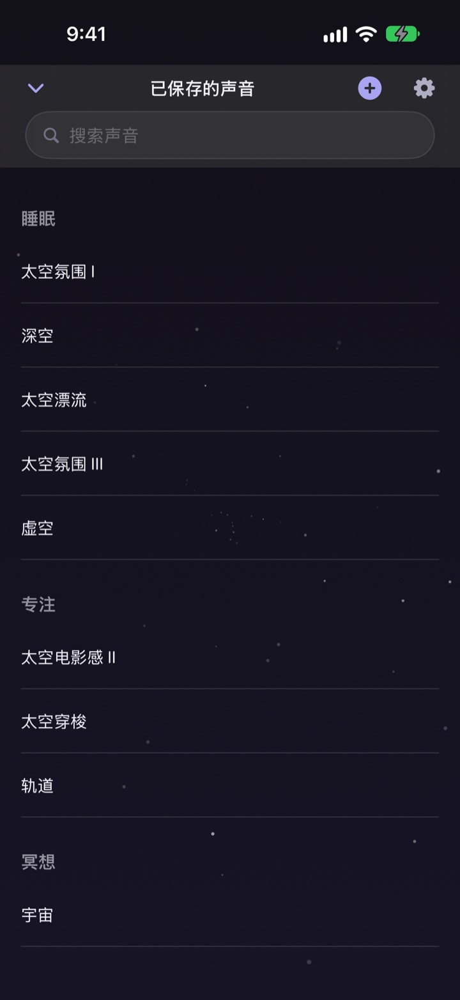

睡前光是挑声音就花了一个小时？
雨声太单调，海浪太吵，放个视频中途还插广告。Dalbit 让你把喜欢的声音亲手叠在一起，调成最合耳朵的样子，再把它收进一轮月亮里。
把喜欢的声音叠在一起
雨声、水滴、鸟鸣、颂钵，一层层叠加。每一层都能调音量、出现的间隔和声音的位置，还能垫上海浪或钢琴作背景音乐。
做好的声音起个名字保存，随时都能再拿出来。

睡着后悄悄停下，不把你吵醒
睡眠定时器不会突然切断声音，而是慢慢调小再停下，让结束的那一刻不会把你惊醒。
关掉屏幕或切到别的应用，声音照样继续；放着不动，屏幕也会自己变暗。

早上用温柔的声音叫醒你
用颂钵、藏式颂钵、鸟鸣、布谷鸟等声音设置闹钟，还能按星期重复。

一轮月亮全搞定
点一下月亮开始播放，再点一下暂停。左右滑换声音，上滑打开睡眠定时器，下滑打开已保存的声音。
听到喜欢的声音，长按月亮就能加入收藏。

三步就能开始
- 1
点一下月亮
打开应用，点月亮，声音马上响起。
- 2
左右滑一滑
一直滑到听着顺耳的声音为止。
- 3
定好时间，躺下
上滑设定时间，到点后声音会慢慢消失。
月亮能做什么
- 轻点
- 播放、暂停
- 左右滑动
- 切换声音
- 上滑
- 睡眠定时器和闹钟
- 下滑
- 已保存的声音
- 长按
- 加入收藏
也可以用锁定屏幕上的播放控制来暂停和继续。
收听免费，想做更多就用高级版
免费
- 收听所有声音
- 叠加声音做出自己的声音
- 最多保存 3 个自己的声音
- 慢慢淡出的睡眠定时器
- 温柔的声音闹钟
- 收藏
Dalbit 高级版
- 不限数量地制作和保存自己的声音
按月自动续期订阅，含免费试用
除非在当前周期结束前至少 24 小时取消，否则订阅会自动续期；免费试用结束后开始扣费。使用条款适用 Apple 标准许可协议（EULA）。
常见问题
怎么播放和切换声音？
点主屏幕上的月亮开始播放，再点一次停止。左右滑切换声音，上滑打开睡眠定时器，下滑打开我的声音。
关掉屏幕声音会停吗？
不会。关掉屏幕或切换到其他应用，声音都会继续播放。要停止，请再点一下月亮，或使用锁定屏幕上的播放控制。
睡眠定时器结束后会怎样？
到了设定的时间，声音不会突然中断，而是慢慢变小后停止，这样睡着后不会被吵醒。
闹钟不响。
第一次创建闹钟时需要允许闹钟权限。请到“设置”>“Dalbit”确认闹钟权限已打开。
我做的声音保存在哪里？
你做的声音、闹钟和设置都只保存在这台设备上。删除应用会一并删除，请留意。
免费能用到什么程度？
所有声音都能听，也能叠加声音并保存最多 3 个自己的声音。睡眠定时器和闹钟同样免费。订阅高级版后，自己的声音可以不限数量地制作。
怎么取消订阅？
前往“设置”>“Apple 账户”>“订阅”，选择 Dalbit 即可取消。如果没有在当前周期结束前至少 24 小时取消，订阅会自动续期。
换了手机，订阅不见了。
用同一个 Apple 账户登录，在 Dalbit 的订阅页面点“恢复购买”，订阅就会重新生效。
想反馈问题或提功能建议。
请使用应用设置中的“给开发者反馈”，或发邮件到下面的地址。我们通常会在几天内回复。
有问题或想法，请发邮件到 mizzking75@gmail.com。